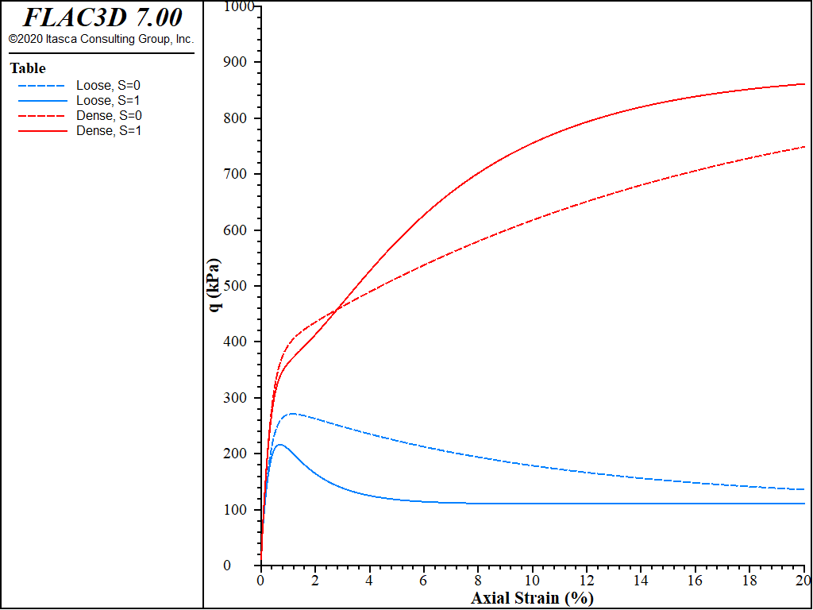
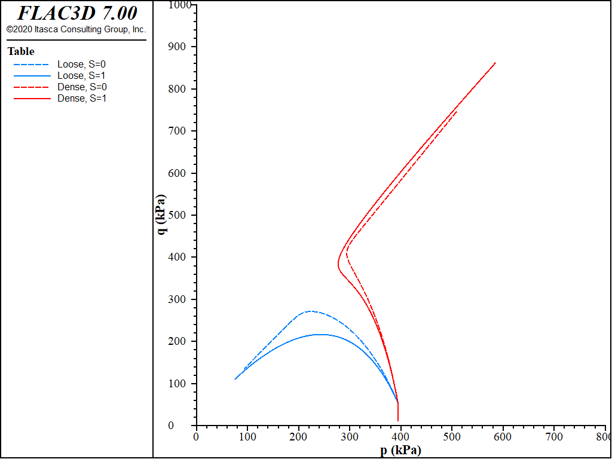

采用 NorSand 模型的不排水三轴试验
注意
本示例的项目文件可在 FLAC3D 中查看/运行。[1] 该项目的主数据文件见本示例末尾。
NorSand 模型（NorSand model）用于模拟三轴固结不排水（CU）试验， 初始各向同性应力为 395 kPa、OCR = 1.1，分别在不含和含附加软化项（\(S\) = 0 和 1）的情况下进行。 初始状态参数为 \(\psi_0=-0.025\) 和 \(\psi_0=0.10\)。 材料特性列于表 1。 请注意，这些试验中采用了依赖于状态参数的硬化模量（\(H \ne 0\)） 和非线性应力相关的弹性剪切模量（\(m \ne 1\)）。 此外还采用了略超固结比（\(OCR = 1.1\)）。 输入参数汇总于下表：
\(C_1\) 1.2 \(C_2\) 0.06 \(C_3\) 0.0 \(S\) 0 和 1 \(M_{tc}\) 1.47 \(\chi_{tc}\) 3.2 \(N\) 0.5 \(H_0\) 75 \(H_y\) 400 \(G_{ref}\) 20970 \(m\) 0.47 \(p_{ref}\) 100 \(\nu\) 0.15 OCR 1.1
图 1（Figure 1） 和 图 2（Figure 2） 分别给出了 FLAC3D 模拟结果， 其中包括 \(\psi_0=-0.025\)（临界状态线的密砂侧）和 \(\psi_0=0.10\)（临界状态线的松砂侧）的可选软化项有无两种情况。 除初始孔隙比不同外，密砂的剪切硬化和松砂的剪切软化在相同参数和加载条件下得到再现。 这两幅图还展示了附加软化项的影响。


图 1：初始 \(\psi_0=-0.025\) 和 \(\psi_0=0.10\) 下不排水三轴压缩试验中 FLAC3D 模拟的 \(q\) 与轴向应变关系，含（\(S=1\)）或不含（\(S=0\)）帽盖软化项。


图 2：初始 \(\psi_0=-0.025\) 和 \(\psi_0=0.10\) 下不排水三轴压缩试验中 FLAC3D 模拟的 \(q\) 与 \(p\) 关系，含（\(S=1\)）或不含（\(S=0\)）帽盖软化项。
数据文件
model new
model configure plugins
model large-strain off
;
[global psi = -0.025]
[global indexSoft = 0.0]
;
zone create brick size 1 1 1
zone cmodel assign norsand
;
zone property density 1.6
zone property shear-reference 2.097e4 exponent 0.47 poisson 0.15
zone property c-s-1 1.2 c-s-2 0.06 index-softening [indexSoft]
zone property ratio-critical 1.47 hardening-0 75.0 hardening-y 400.0
zone property factor-dilatancy 3.2 factor-coupling 0.5
zone property state-parameter-initial [psi] o-c-r 1.1
;
zone initialize stress xx -395 yy -395 zz -395
;
program call "ini-stress"
[ini_stress(::zone.list, "norsand")]
;
zone gridpoint fix velocity
[global _zvel = -2e-6]
[global _hvel = _zvel*(-0.5)]
zone face apply velocity-z [_zvel] range position-z 1
zone face apply velocity-x [_hvel] range position-x 1
zone face apply velocity-y [_hvel] range position-y 1
;
[global _z1 = zone.near(0.5,0.5,0.5)]
fish define q1
local sxx = zone.stress.xx(_z1)
local syy = zone.stress.yy(_z1)
local szz = zone.stress.zz(_z1)
global q1 = sxx - szz
global p1 = -(sxx+syy+szz)/3. - zone.pp(_z1)
global eps_a1 = -gp.disp.z(gp.near(1,1,1))*100. ; 轴向应变 (%)
end
;
fish history name '1' q1
fish history name '2' p1
fish history name '3' eps_a1
;
history interval 50
model cycle 100000
;
history export '1' vs '2' table "dense_qp"
table "dense_qp" export "dense_qp" truncate
history export '1' vs '3' table "dense_qe"
table "dense_qe" export "dense_qe" truncate
;
model save "dense"
尾注
| [1] | 要在 FLAC3D 中查看该项目，请使用程序菜单。
⮡ FLAC |
| 这些内容对您有帮助吗？… 版权与免责声明 |
FLAC3D © 2019, Itasca | 原文更新于 2020 年 10 月 8 日 |